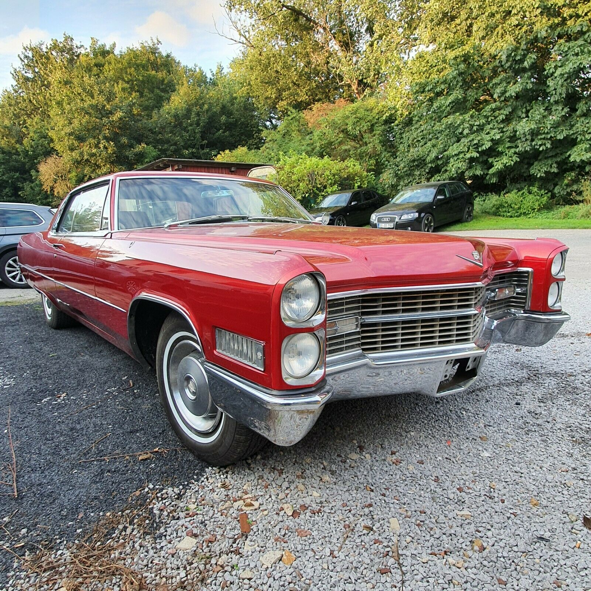

All vehicle photos should be placed in boxes with the ratio width/height=4/3
For images that have a width/height ratio = 1.28-1.38, please use CSS property object-fit:cover
Original size of the photo (width/height) 1600/1168=1.37 is beetween the range 1.28-1.38 therefore the CSS property object-fit:cover should be used here.Original size of the photo (width/height) 1600/1200=1.33 is beetween the range 1.28-1.38 therefore the CSS property object-fit:cover should be used here.
For images that have a width/height ratio <> 1.28-1.38, please use three layers
The original image size (width/height) 850/400=1.78 is not between 1.28 and 1.38 so please use three layers. The lowest layer with the photo, with the CSS property object-fit:canvas. The middle layer with the background, with a little transparency, CSS property background-color:#111133; opacity:0.91. The topmost layer with the photo, with CSS property object-fit:contain.

The original image size (width/height) 1600/1600=1 is not between 1.28 and 1.38 so please use three layers. The lowest layer with the photo, with the CSS property object-fit:canvas. The middle layer with the background, with a little transparency, CSS property background-color:#111133; opacity:0.91. The topmost layer with the photo, with CSS property object-fit:contain.